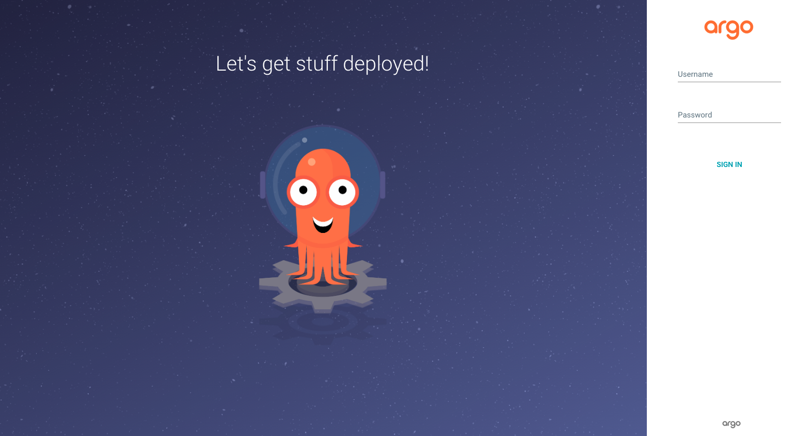
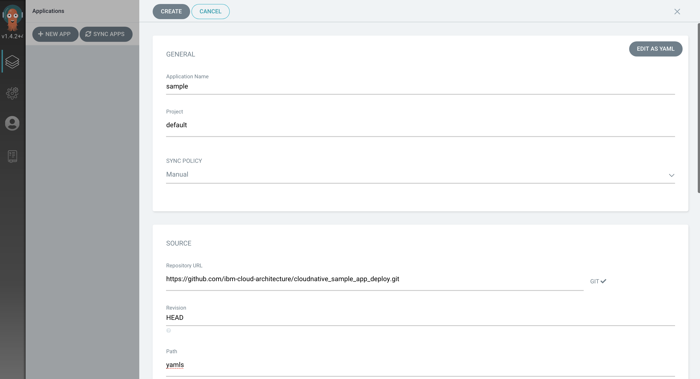
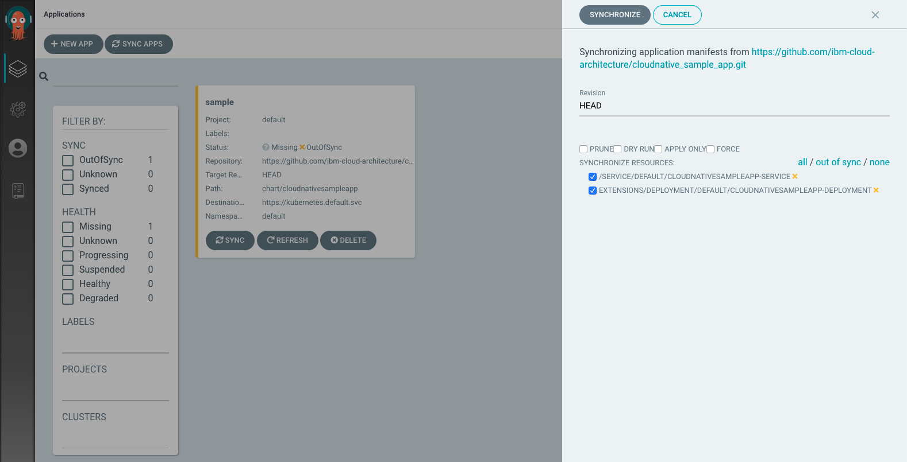

ArgoCD Lab
OpenShift
Pre-requisites
Make sure your environment is setup properly for the lab.
Check the Environment Setup page for your setup.
ArgoCD Installation
- Create the namespace
argocdto install argocd - Install ArgoCD as follows.
- When installing the tutorial, make sure you wait until the argocd-operator is finished before installing the argocd-cr..or it will fail. You can do this:
and wait for the "succeeded" to come up before proceeding. and wait for the argocd server Pod to be running
oc get ClusterServiceVersion -n argocd NAME DISPLAY VERSION REPLACES PHASE argocd-operator.v0.0.8 Argo CD 0.0.8 Succeeded - Install the
argocdCLI, for example on OSX use brew - Set an environment variable
ARGOCD_URLusing theEXTERNAL-IP
Deploying the app
- Login into the UI.
- Use
adminas the username and get the password with the following command For example the output is similar to this:

- Now go back to the ArgoCD home and click on
NEW APP. - Add the below details:
- Application Name:
sample - Project -
default - SYNC POLICY:
Manual - REPO URL:
https://github.com/ibm-cloud-architecture/cloudnative_sample_app_deploy - Revision:
HEAD - Path:
openshift

- Cluster - Select the default one
https://kubernetes.default.svcto deploy in-cluster - Namespace -
default - Click Create to finish

- You will now see the available apps.

- Initially, the app will be out of sync. It is yet to be deployed. You need to sync it for deploying.
To sync the application, click SYNC and then SYNCHRONIZE.

- Wait till the app is deployed.

- Once the app is deployed, click on it to see the details.


Verifying the deployment
- Access the app to verify if it is correctly deployed.
- List the cloudnativesampleapp-service route
It should have an IP under
EXTERNAL-IPcolumn - Set an environment variable
APP_URLusing theEXTERNAL-IP - Access the url using
curl
Using the ArgoCD CLI
- Login using the cli.
- Use
adminas the username and get the password with the following command - Now login as follows.
- List the applications
- Get application details
Name: sample Project: default Server: https://kubernetes.default.svc Namespace: default URL: https://10.97.240.99/applications/sample Repo: https://github.com/ibm-cloud-architecture/cloudnative_sample_app_deploy Target: HEAD Path: openshift SyncWindow: Sync Allowed Sync Policy: <none> Sync Status: Synced to HEAD (9684037) Health Status: Healthy GROUP KIND NAMESPACE NAME STATUS HEALTH HOOK MESSAGE Service default cloudnativesampleapp-service Synced Healthy service/cloudnativesampleapp-service created apps Deployment default cloudnativesampleapp-deployment Synced Healthy deployment.apps/cloudnativesampleapp-deployment created - Show application deployment history
References
Kubernetes
Pre-requisites
Make sure your environment is setup properly for the lab.
Check the Environment Setup page for your setup.
ArgoCD Installation
- Create the namespace
argocdto install argocd -
Create RBAC resources
kubectl create -n argocd -f https://raw.githubusercontent.com/argoproj-labs/argocd-operator/v0.0.8/deploy/service_account.yaml kubectl create -n argocd -f https://raw.githubusercontent.com/argoproj-labs/argocd-operator/v0.0.8/deploy/role.yaml kubectl create -n argocd -f https://raw.githubusercontent.com/argoproj-labs/argocd-operator/v0.0.8/deploy/role_binding.yaml kubectl create -n argocd -f https://raw.githubusercontent.com/ibm-cloud-architecture/learning-cloudnative-101/master/static/yamls/argo-lab/argo-clusteradmin.yaml -
Install CRDs
Verify CRDskubectl create -n argocd -f https://raw.githubusercontent.com/argoproj-labs/argocd-operator/v0.0.8/deploy/argo-cd/argoproj.io_applications_crd.yaml kubectl create -n argocd -f https://raw.githubusercontent.com/argoproj-labs/argocd-operator/v0.0.8/deploy/argo-cd/argoproj.io_appprojects_crd.yaml kubectl create -n argocd -f https://raw.githubusercontent.com/argoproj-labs/argocd-operator/v0.0.8/deploy/crds/argoproj.io_argocdexports_crd.yaml kubectl create -n argocd -f https://raw.githubusercontent.com/argoproj-labs/argocd-operator/v0.0.8/deploy/crds/argoproj.io_argocds_crd.yaml - Deploy Operator
- Deploy ArgoCD CO
Verify that ArgoCD Pods are running
kubectl create -n argocd -f https://raw.githubusercontent.com/argoproj-labs/argocd-operator/v0.0.8/examples/argocd-lb.yamlVerify that the other ArgoCD resources are createdNAME READY STATUS RESTARTS AGE argocd-operator-5f7d8cf7d8-486vn 1/1 Running 0 3m46s example-argocd-application-controller-7dc5fcb75d-xkk5h 1/1 Running 0 2m3s example-argocd-dex-server-bb9df96cb-ndmhl 1/1 Running 0 2m3s example-argocd-redis-756b6764-sb2gt 1/1 Running 0 2m3s example-argocd-repo-server-75944fcf87-zmh48 1/1 Running 0 2m3s example-argocd-server-747b684c8c-xhgl9 1/1 Running 0 2m3s -
List the argocd-server service
-
From the script, the Argo Server service has a
typeofLoadBalancer. If theExternalIPis in apendingstate, then there is no loadBalancer for your cluster, so we only need the the ArgoCD server'sNodePort. Otherwise use theExternalIPandNodePortto access Argo. -
To access the service we need the
Node's External IPand theNodePort. Let's set an environment variableARGOCD_URLwithNODE_EXTERNAL_IP:NodePort.export NODE_EXTERNAL_IP="$(kubectl get nodes -o jsonpath='{.items[0].status.addresses[?(@.type=="ExternalIP")].address}')" export ARGOCD_NODEPORT="$(kubectl get svc example-argocd-server -n $ARGOCD_NAMESPACE -o jsonpath='{.spec.ports[0].nodePort}')" export ARGOCD_URL="https://$NODE_EXTERNAL_IP:$ARGOCD_NODEPORT" echo ARGOCD_URL=$ARGOCD_URL -
If you can't access the NodePort from your computer and only http/80 then edit the argocd-server and add the flag
Use the kube api to proxy into the argocd server using--insecurekubectl port-forwardThen you can access the argocd server locally on port 8080 http://localhost:8080
Deploying the app
- Login using the Browser into the UI using
$ARGOCD_URLorlocalhost:8080if using port-forward - Use
adminas the username and get the password with the following command For example the output is similar to this:
- Now go back to the ArgoCD home and click on
NEW APP. - Add the below details:
- Application Name:
sample - Project -
default - SYNC POLICY:
Manual - REPO URL:
https://github.com/ibm-cloud-architecture/cloudnative_sample_app_deploy - Revision:
HEAD - Path:
kubernetes
- Cluster - Select the default one
https://kubernetes.default.svcto deploy in-cluster - Namespace -
default - Click Create to finish
- You will now see the available apps.
- Initially, the app will be out of sync. It is yet to be deployed. You need to sync it for deploying.
To sync the application, click SYNC and then SYNCHRONIZE.
- Wait till the app is deployed.
- Once the app is deployed, click on it to see the details.
Verifying the deployment
- Access the app to verify if it is correctly deployed.
- List the cloudnativesampleapp-service service
It will have the
NodePortfor the application. In this case, it is30499. - Set an environment variable
APP_URLusing theNode's IPandNodePortvalues - Access the url using
curl